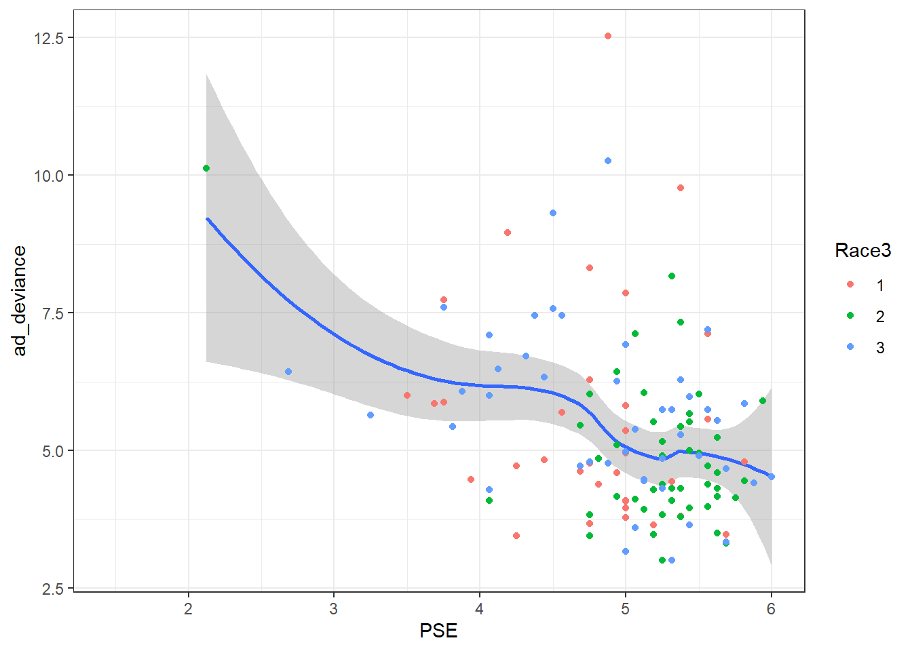
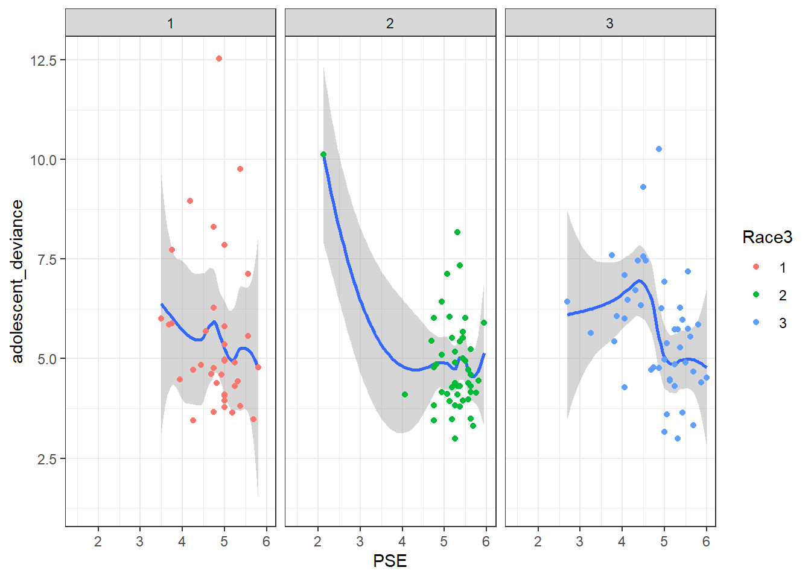
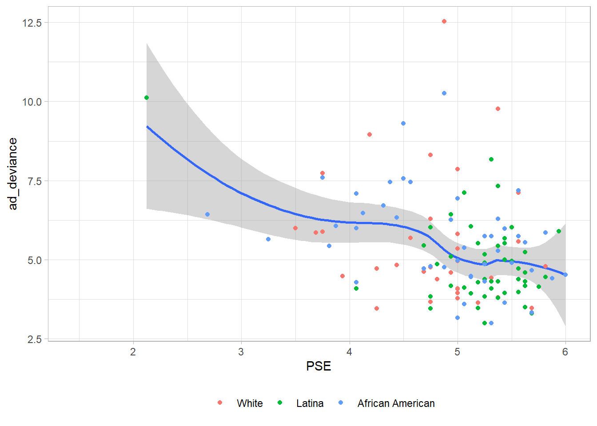
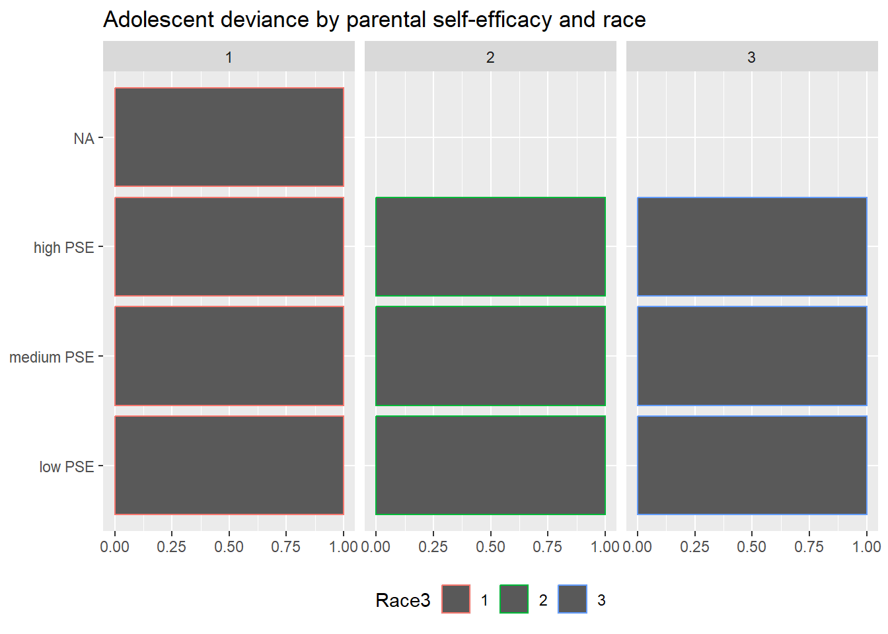
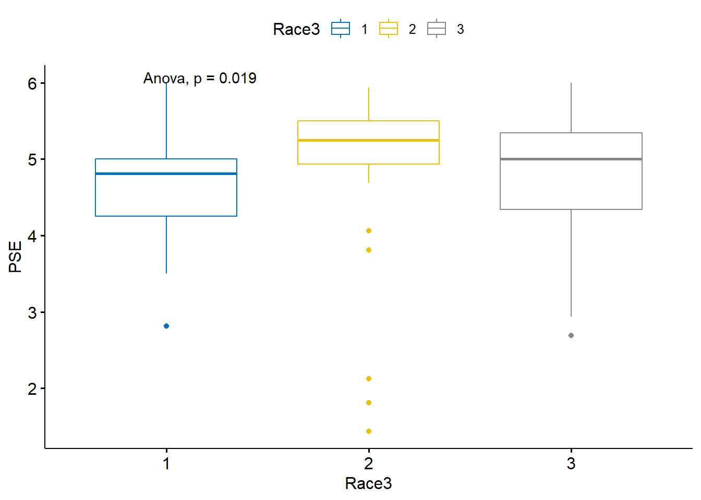
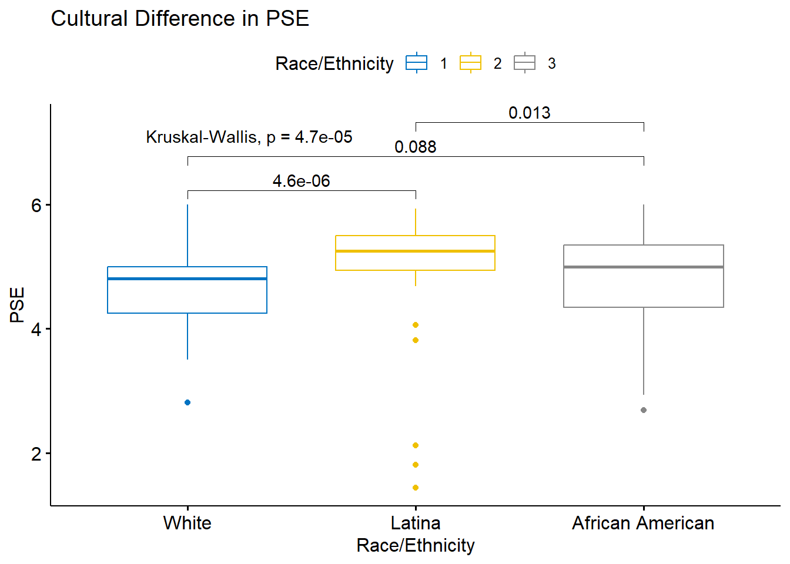
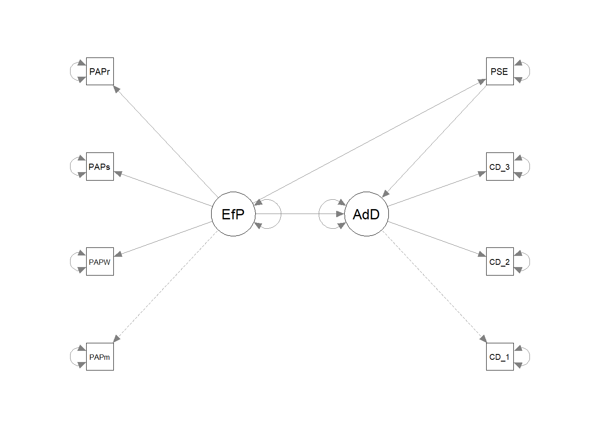

Portfolio 3
library(tidyverse)
library(dplyr)
library(haven)
Mother_and_teen_data <- read_sav("Mother_and_teen_data.sav")
#View(Mother_and_teen_data)
#Goal is to do make a better graph to show that culture differentiates the level of PSE.#delete the NA from Race3
library(tidyverse)
library(dplyr)
library(haven)
mt <- Mother_and_teen_data %>%
filter(!is.na(Race3)) %>%
mutate(ad_deviance=CD_1 + CD_2 + CD_3)mt$Race3 <- as.factor(mt$Race3)
ggplot(data=mt, mapping = aes(x = PSE, y = ad_deviance)) +
geom_smooth(size=1, alpha=0.4) +
geom_point(aes(color=Race3)) +
theme_bw()## `geom_smooth()` using method = 'loess' and formula =
## 'y ~ x'## Warning: Removed 52 rows containing non-finite values
## (`stat_smooth()`).## Warning: Removed 52 rows containing missing values
## (`geom_point()`).
ggplot(data=mt, mapping = aes(x = PSE, y = ad_deviance)) +
geom_smooth(size=1, alpha=0.4) +
geom_point(aes(color=Race3)) +
facet_wrap(~Race3) +
theme_bw() +
labs(y="adolescent_deviance", fill="race/ethnicity")## `geom_smooth()` using method = 'loess' and formula =
## 'y ~ x'## Warning: Removed 52 rows containing non-finite values
## (`stat_smooth()`).## Warning: Removed 52 rows containing missing values
## (`geom_point()`).
ggplot(data=mt, mapping = aes(x = PSE, y = ad_deviance)) +
geom_smooth() +
geom_point(aes(color=Race3)) +
theme_light() +
theme(legend.position = "bottom", legend.title=element_blank()) +
scale_color_discrete(labels = c("White", "Latina", "African American")) ## `geom_smooth()` using method = 'loess' and formula =
## 'y ~ x'## Warning: Removed 52 rows containing non-finite values
## (`stat_smooth()`).## Warning: Removed 52 rows containing missing values
## (`geom_point()`).
#create a new variable that defined by high PSE, medium PSE, and low PSE.
mt<-mt %>%
mutate(PSE_cat = dplyr::case_when(
PSE <= 3 ~ "low PSE",
PSE > 3 & PSE <= 5 ~ "medium PSE",
PSE > 5 ~ "high PSE"),
PSE_cat = factor(PSE_cat,
level = c("low PSE", "medium PSE","high PSE")
)
)
mt$PSE_cat <- as.factor(mt$PSE_cat)#failure
ggplot(mt, aes(y = PSE_cat, fill = ad_deviance)) +
geom_bar(aes(color=Race3), position = "fill") +
facet_wrap(. ~ Race3) +
scale_x_continuous() +
labs(title = "Adolescent deviance by parental self-efficacy and race",
x = NULL, y = NULL, fill = NULL) +
theme(legend.position = "bottom")## Warning: The following aesthetics were dropped during
## statistical transformation: fill
## ℹ This can happen when ggplot fails to infer the
## correct grouping structure in the data.
## ℹ Did you forget to specify a `group` aesthetic or to
## convert a numerical variable into a factor?
## The following aesthetics were dropped during
## statistical transformation: fill
## ℹ This can happen when ggplot fails to infer the
## correct grouping structure in the data.
## ℹ Did you forget to specify a `group` aesthetic or to
## convert a numerical variable into a factor?
## The following aesthetics were dropped during
## statistical transformation: fill
## ℹ This can happen when ggplot fails to infer the
## correct grouping structure in the data.
## ℹ Did you forget to specify a `group` aesthetic or to
## convert a numerical variable into a factor?
ggplot(mt, aes(x=Race3, y=PSE, color=Race3)) +
geom_boxplot() +
labs(title="PSE by Race/Ethnicity", x="Race/Ethnicity", y="PSE", fill="Race/Ethnicity")## Warning: Removed 1 rows containing non-finite values
## (`stat_boxplot()`).
#try to show the significant difference among ethnic groups in the plot
library(ggpubr)
compare_means(PSE ~ Race3, data = mt, method = "anova")## # A tibble: 1 × 6
## .y. p p.adj p.format p.signif method
## <chr> <dbl> <dbl> <chr> <chr> <chr>
## 1 PSE 0.0191 0.019 0.019 * Anovaggboxplot(mt, x = "Race3", y = "PSE",
color = "Race3", palette = "jco")+
stat_compare_means(method = "anova")## Warning: Removed 1 rows containing non-finite values
## (`stat_boxplot()`).## Warning: Removed 1 rows containing non-finite values
## (`stat_compare_means()`).
compare_means(PSE ~ Race3, data = mt)## # A tibble: 3 × 8
## .y. group1 group2 p p.adj p.format p.signif method
## <chr> <chr> <chr> <dbl> <dbl> <chr> <chr> <chr>
## 1 PSE 1 2 0.00000460 0.000014 4.6e-06 **** Wilcoxon
## 2 PSE 1 3 0.0884 0.088 0.088 ns Wilcoxon
## 3 PSE 2 3 0.0125 0.025 0.013 * Wilcoxonmy_comparisons <- list( c("1", "2"), c("1", "3"), c("2", "3") )
ggboxplot(mt, x = "Race3", y = "PSE",
color = "Race3", palette = "jco")+
labs(title= "Cultural Difference in PSE", x="Race/Ethnicity", y="PSE", color="Race/Ethnicity") +
scale_x_discrete(labels=c('White', 'Latina', 'African American'))+
stat_compare_means(comparisons = my_comparisons)+
stat_compare_means(label.y = 7) ## Warning: Removed 1 rows containing non-finite values
## (`stat_boxplot()`).## Warning: Removed 1 rows containing non-finite values
## (`stat_signif()`).## Warning: Removed 1 rows containing non-finite values
## (`stat_compare_means()`).
#VERY SATISFIED WITH THIS PLOT!test_model1<-"AdolD=~CD_1 +CD_2 +CD_3
EffectP=~PAPmoni+PAPWARM+PAPsolic+PAPrule
PSE~EffectP
AdolD~EffectP + PSE"
#residual correlations
PAPmoni~~PAPsoli## PAPmoni ~ ~PAPsoliPAPmoni~~PAPrule## PAPmoni ~ ~PAPrulePAPWARM~~PAPsoli## PAPWARM ~ ~PAPsoliCD_1~~CD_2## CD_1 ~ ~CD_2CD_1~~CD_3## CD_1 ~ ~CD_3CD_2~~CD_3## CD_2 ~ ~CD_3library(semPlot)
library(lavaan)
library(readxl)
library(dplyr)
library(haven)
teendata<- Mother_and_teen_data %>% filter( !is.na(PerPW))
fit1<- sem(model1, data=Mother_and_teen_data)
fit1## lavaan 0.6.14 ended normally after 36 iterations
##
## Estimator ML
## Optimization method NLMINB
## Number of model parameters 18
##
## Used Total
## Number of observations 132 184
##
## Model Test User Model:
##
## Test statistic 29.756
## Degrees of freedom 18
## P-value (Chi-square) 0.040summary(fit1, standardized=TRUE, ci=TRUE, fit.measures=TRUE)## lavaan 0.6.14 ended normally after 36 iterations
##
## Estimator ML
## Optimization method NLMINB
## Number of model parameters 18
##
## Used Total
## Number of observations 132 184
##
## Model Test User Model:
##
## Test statistic 29.756
## Degrees of freedom 18
## P-value (Chi-square) 0.040
##
## Model Test Baseline Model:
##
## Test statistic 306.486
## Degrees of freedom 28
## P-value 0.000
##
## User Model versus Baseline Model:
##
## Comparative Fit Index (CFI) 0.958
## Tucker-Lewis Index (TLI) 0.934
##
## Loglikelihood and Information Criteria:
##
## Loglikelihood user model (H0) -736.817
## Loglikelihood unrestricted model (H1) -721.939
##
## Akaike (AIC) 1509.634
## Bayesian (BIC) 1561.525
## Sample-size adjusted Bayesian (SABIC) 1504.591
##
## Root Mean Square Error of Approximation:
##
## RMSEA 0.070
## 90 Percent confidence interval - lower 0.015
## 90 Percent confidence interval - upper 0.114
## P-value H_0: RMSEA <= 0.050 0.211
## P-value H_0: RMSEA >= 0.080 0.393
##
## Standardized Root Mean Square Residual:
##
## SRMR 0.062
##
## Parameter Estimates:
##
## Standard errors Standard
## Information Expected
## Information saturated (h1) model Structured
##
## Latent Variables:
## Estimate Std.Err z-value P(>|z|) ci.lower ci.upper
## AdolD =~
## CD_1 1.000 1.000 1.000
## CD_2 1.111 0.140 7.955 0.000 0.837 1.385
## CD_3 0.598 0.082 7.274 0.000 0.437 0.759
## EffectP =~
## PAPmoni 1.000 1.000 1.000
## PAPWARM 0.795 0.167 4.751 0.000 0.467 1.123
## PAPsolic 1.147 0.231 4.972 0.000 0.695 1.600
## PAPrule 0.620 0.155 3.990 0.000 0.315 0.924
## Std.lv Std.all
##
## 0.541 0.713
## 0.601 0.960
## 0.323 0.654
##
## 0.335 0.528
## 0.267 0.592
## 0.385 0.855
## 0.208 0.455
##
## Regressions:
## Estimate Std.Err z-value P(>|z|) ci.lower ci.upper
## PSE ~
## EffectP 0.646 0.205 3.143 0.002 0.243 1.049
## AdolD ~
## EffectP -0.298 0.172 -1.730 0.084 -0.636 0.040
## PSE -0.247 0.081 -3.064 0.002 -0.406 -0.089
## Std.lv Std.all
##
## 0.216 0.335
##
## -0.185 -0.185
## -0.457 -0.295
##
## Variances:
## Estimate Std.Err z-value P(>|z|) ci.lower ci.upper
## .CD_1 0.283 0.044 6.413 0.000 0.197 0.369
## .CD_2 0.031 0.033 0.927 0.354 -0.034 0.096
## .CD_3 0.139 0.020 7.053 0.000 0.101 0.178
## .PAPmoni 0.291 0.041 7.173 0.000 0.211 0.370
## .PAPWARM 0.132 0.020 6.691 0.000 0.093 0.170
## .PAPsolic 0.054 0.022 2.468 0.014 0.011 0.098
## .PAPrule 0.166 0.022 7.524 0.000 0.123 0.209
## .PSE 0.370 0.047 7.850 0.000 0.278 0.463
## .AdolD 0.246 0.056 4.385 0.000 0.136 0.356
## EffectP 0.112 0.039 2.861 0.004 0.035 0.189
## Std.lv Std.all
## 0.283 0.492
## 0.031 0.078
## 0.139 0.572
## 0.291 0.721
## 0.132 0.650
## 0.054 0.269
## 0.166 0.793
## 0.370 0.888
## 0.842 0.842
## 1.000 1.000modindices(fit1, sort.=TRUE)## lhs op rhs mi epc sepc.lv sepc.all sepc.nox
## 45 PAPmoni ~~ PAPrule 17.031 0.091 0.091 0.414 0.414
## 46 PAPWARM ~~ PAPsolic 5.606 0.061 0.061 0.719 0.719
## 47 PAPWARM ~~ PAPrule 5.538 -0.037 -0.037 -0.251 -0.251
## 30 CD_1 ~~ PAPmoni 3.035 0.047 0.047 0.164 0.164
## 43 PAPmoni ~~ PAPWARM 2.681 -0.037 -0.037 -0.191 -0.191
## 31 CD_1 ~~ PAPWARM 2.081 -0.027 -0.027 -0.138 -0.138
## 44 PAPmoni ~~ PAPsolic 1.712 -0.041 -0.041 -0.326 -0.326
## 41 CD_3 ~~ PAPsolic 1.634 0.015 0.015 0.168 0.168
## 22 AdolD =~ PAPWARM 1.603 -0.090 -0.048 -0.108 -0.108
## 40 CD_3 ~~ PAPWARM 1.255 -0.014 -0.014 -0.106 -0.106
## 35 CD_2 ~~ PAPmoni 1.088 -0.020 -0.020 -0.212 -0.212
## 36 CD_2 ~~ PAPWARM 0.985 0.013 0.013 0.206 0.206
## 42 CD_3 ~~ PAPrule 0.784 -0.012 -0.012 -0.081 -0.081
## 34 CD_2 ~~ CD_3 0.676 0.037 0.037 0.561 0.561
## 24 AdolD =~ PAPrule 0.627 0.059 0.032 0.070 0.070
## 33 CD_1 ~~ PAPrule 0.603 0.016 0.016 0.072 0.072
## 32 CD_1 ~~ PAPsolic 0.586 -0.013 -0.013 -0.102 -0.102
## 29 CD_1 ~~ CD_3 0.518 -0.024 -0.024 -0.123 -0.123
## 25 EffectP =~ CD_1 0.409 -0.112 -0.038 -0.050 -0.050
## 48 PAPsolic ~~ PAPrule 0.355 -0.012 -0.012 -0.124 -0.124
## 26 EffectP =~ CD_2 0.280 0.083 0.028 0.045 0.045
## 23 AdolD =~ PAPsolic 0.279 0.042 0.023 0.050 0.050
## 39 CD_3 ~~ PAPmoni 0.137 -0.007 -0.007 -0.034 -0.034
## 38 CD_2 ~~ PAPrule 0.125 0.005 0.005 0.071 0.071
## 37 CD_2 ~~ PAPsolic 0.002 0.000 0.000 0.012 0.012
## 28 CD_1 ~~ CD_2 0.001 0.003 0.003 0.031 0.031
## 27 EffectP =~ CD_3 0.000 -0.002 -0.001 -0.002 -0.002
## 21 AdolD =~ PAPmoni 0.000 0.000 0.000 0.000 0.000inspect(fit1, what="std")## $lambda
## AdolD EffctP PSE
## CD_1 0.713 0.000 0
## CD_2 0.960 0.000 0
## CD_3 0.654 0.000 0
## PAPmoni 0.000 0.528 0
## PAPWARM 0.000 0.592 0
## PAPsolic 0.000 0.855 0
## PAPrule 0.000 0.455 0
## PSE 0.000 0.000 1
##
## $theta
## CD_1 CD_2 CD_3 PAPmon PAPWAR PAPslc PAPrul PSE
## CD_1 0.492
## CD_2 0.000 0.078
## CD_3 0.000 0.000 0.572
## PAPmoni 0.000 0.000 0.000 0.721
## PAPWARM 0.000 0.000 0.000 0.000 0.650
## PAPsolic 0.000 0.000 0.000 0.000 0.000 0.269
## PAPrule 0.000 0.000 0.000 0.000 0.000 0.000 0.793
## PSE 0.000 0.000 0.000 0.000 0.000 0.000 0.000 0.000
##
## $psi
## AdolD EffctP PSE
## AdolD 0.842
## EffectP 0.000 1.000
## PSE 0.000 0.000 0.888
##
## $beta
## AdolD EffctP PSE
## AdolD 0 -0.185 -0.295
## EffectP 0 0.000 0.000
## PSE 0 0.335 0.000parameterestimates(fit1, standardized = TRUE)## lhs op rhs est se z pvalue ci.lower ci.upper std.lv
## 1 AdolD =~ CD_1 1.000 0.000 NA NA 1.000 1.000 0.541
## 2 AdolD =~ CD_2 1.111 0.140 7.955 0.000 0.837 1.385 0.601
## 3 AdolD =~ CD_3 0.598 0.082 7.274 0.000 0.437 0.759 0.323
## 4 EffectP =~ PAPmoni 1.000 0.000 NA NA 1.000 1.000 0.335
## 5 EffectP =~ PAPWARM 0.795 0.167 4.751 0.000 0.467 1.123 0.267
## 6 EffectP =~ PAPsolic 1.147 0.231 4.972 0.000 0.695 1.600 0.385
## 7 EffectP =~ PAPrule 0.620 0.155 3.990 0.000 0.315 0.924 0.208
## 8 PSE ~ EffectP 0.646 0.205 3.143 0.002 0.243 1.049 0.216
## 9 AdolD ~ EffectP -0.298 0.172 -1.730 0.084 -0.636 0.040 -0.185
## 10 AdolD ~ PSE -0.247 0.081 -3.064 0.002 -0.406 -0.089 -0.457
## 11 CD_1 ~~ CD_1 0.283 0.044 6.413 0.000 0.197 0.369 0.283
## 12 CD_2 ~~ CD_2 0.031 0.033 0.927 0.354 -0.034 0.096 0.031
## 13 CD_3 ~~ CD_3 0.139 0.020 7.053 0.000 0.101 0.178 0.139
## 14 PAPmoni ~~ PAPmoni 0.291 0.041 7.173 0.000 0.211 0.370 0.291
## 15 PAPWARM ~~ PAPWARM 0.132 0.020 6.691 0.000 0.093 0.170 0.132
## 16 PAPsolic ~~ PAPsolic 0.054 0.022 2.468 0.014 0.011 0.098 0.054
## 17 PAPrule ~~ PAPrule 0.166 0.022 7.524 0.000 0.123 0.209 0.166
## 18 PSE ~~ PSE 0.370 0.047 7.850 0.000 0.278 0.463 0.370
## 19 AdolD ~~ AdolD 0.246 0.056 4.385 0.000 0.136 0.356 0.842
## 20 EffectP ~~ EffectP 0.112 0.039 2.861 0.004 0.035 0.189 1.000
## std.all std.nox
## 1 0.713 0.713
## 2 0.960 0.960
## 3 0.654 0.654
## 4 0.528 0.528
## 5 0.592 0.592
## 6 0.855 0.855
## 7 0.455 0.455
## 8 0.335 0.335
## 9 -0.185 -0.185
## 10 -0.295 -0.295
## 11 0.492 0.492
## 12 0.078 0.078
## 13 0.572 0.572
## 14 0.721 0.721
## 15 0.650 0.650
## 16 0.269 0.269
## 17 0.793 0.793
## 18 0.888 0.888
## 19 0.842 0.842
## 20 1.000 1.000fitted(fit1)## $cov
## CD_1 CD_2 CD_3 PAPmon PAPWAR PAPslc PAPrul PSE
## CD_1 0.575
## CD_2 0.325 0.392
## CD_3 0.175 0.194 0.244
## PAPmoni -0.051 -0.057 -0.031 0.403
## PAPWARM -0.041 -0.045 -0.024 0.089 0.203
## PAPsolic -0.059 -0.066 -0.035 0.129 0.103 0.202
## PAPrule -0.032 -0.035 -0.019 0.070 0.055 0.080 0.209
## PSE -0.125 -0.139 -0.075 0.073 0.058 0.083 0.045 0.417residuals(fit1)## $type
## [1] "raw"
##
## $cov
## CD_1 CD_2 CD_3 PAPmon PAPWAR PAPslc PAPrul PSE
## CD_1 0.000
## CD_2 0.000 0.000
## CD_3 -0.006 0.001 0.000
## PAPmoni 0.033 -0.003 -0.006 0.000
## PAPWARM -0.046 -0.017 -0.023 -0.021 0.000
## PAPsolic -0.012 0.004 0.008 -0.005 0.005 0.000
## PAPrule 0.022 0.016 -0.003 0.068 -0.025 -0.002 0.000
## PSE -0.017 0.002 -0.001 -0.017 0.026 -0.001 -0.018 0.000fitmeasures(fit1)## npar fmin chisq
## 18.000 0.113 29.756
## df pvalue baseline.chisq
## 18.000 0.040 306.486
## baseline.df baseline.pvalue cfi
## 28.000 0.000 0.958
## tli nnfi rfi
## 0.934 0.934 0.849
## nfi pnfi ifi
## 0.903 0.580 0.959
## rni logl unrestricted.logl
## 0.958 -736.817 -721.939
## aic bic ntotal
## 1509.634 1561.525 132.000
## bic2 rmsea rmsea.ci.lower
## 1504.591 0.070 0.015
## rmsea.ci.upper rmsea.ci.level rmsea.pvalue
## 0.114 0.900 0.211
## rmsea.close.h0 rmsea.notclose.pvalue rmsea.notclose.h0
## 0.050 0.393 0.080
## rmr rmr_nomean srmr
## 0.019 0.019 0.062
## srmr_bentler srmr_bentler_nomean crmr
## 0.062 0.062 0.070
## crmr_nomean srmr_mplus srmr_mplus_nomean
## 0.070 0.062 0.062
## cn_05 cn_01 gfi
## 129.067 155.400 0.944
## agfi pgfi mfi
## 0.888 0.472 0.956
## ecvi
## 0.498modificationindices(fit1, sort. = TRUE)## lhs op rhs mi epc sepc.lv sepc.all sepc.nox
## 45 PAPmoni ~~ PAPrule 17.031 0.091 0.091 0.414 0.414
## 46 PAPWARM ~~ PAPsolic 5.606 0.061 0.061 0.719 0.719
## 47 PAPWARM ~~ PAPrule 5.538 -0.037 -0.037 -0.251 -0.251
## 30 CD_1 ~~ PAPmoni 3.035 0.047 0.047 0.164 0.164
## 43 PAPmoni ~~ PAPWARM 2.681 -0.037 -0.037 -0.191 -0.191
## 31 CD_1 ~~ PAPWARM 2.081 -0.027 -0.027 -0.138 -0.138
## 44 PAPmoni ~~ PAPsolic 1.712 -0.041 -0.041 -0.326 -0.326
## 41 CD_3 ~~ PAPsolic 1.634 0.015 0.015 0.168 0.168
## 22 AdolD =~ PAPWARM 1.603 -0.090 -0.048 -0.108 -0.108
## 40 CD_3 ~~ PAPWARM 1.255 -0.014 -0.014 -0.106 -0.106
## 35 CD_2 ~~ PAPmoni 1.088 -0.020 -0.020 -0.212 -0.212
## 36 CD_2 ~~ PAPWARM 0.985 0.013 0.013 0.206 0.206
## 42 CD_3 ~~ PAPrule 0.784 -0.012 -0.012 -0.081 -0.081
## 34 CD_2 ~~ CD_3 0.676 0.037 0.037 0.561 0.561
## 24 AdolD =~ PAPrule 0.627 0.059 0.032 0.070 0.070
## 33 CD_1 ~~ PAPrule 0.603 0.016 0.016 0.072 0.072
## 32 CD_1 ~~ PAPsolic 0.586 -0.013 -0.013 -0.102 -0.102
## 29 CD_1 ~~ CD_3 0.518 -0.024 -0.024 -0.123 -0.123
## 25 EffectP =~ CD_1 0.409 -0.112 -0.038 -0.050 -0.050
## 48 PAPsolic ~~ PAPrule 0.355 -0.012 -0.012 -0.124 -0.124
## 26 EffectP =~ CD_2 0.280 0.083 0.028 0.045 0.045
## 23 AdolD =~ PAPsolic 0.279 0.042 0.023 0.050 0.050
## 39 CD_3 ~~ PAPmoni 0.137 -0.007 -0.007 -0.034 -0.034
## 38 CD_2 ~~ PAPrule 0.125 0.005 0.005 0.071 0.071
## 37 CD_2 ~~ PAPsolic 0.002 0.000 0.000 0.012 0.012
## 28 CD_1 ~~ CD_2 0.001 0.003 0.003 0.031 0.031
## 27 EffectP =~ CD_3 0.000 -0.002 -0.001 -0.002 -0.002
## 21 AdolD =~ PAPmoni 0.000 0.000 0.000 0.000 0.000semPaths(fit1, what="paths", whatLables="par", rotation=2)## Warning in qgraph::qgraph(Edgelist, labels = nLab, bidirectional = Bidir, : The
## following arguments are not documented and likely not arguments of qgraph and
## thus ignored: whatLables
fitmeasures(fit1)## npar fmin chisq
## 18.000 0.113 29.756
## df pvalue baseline.chisq
## 18.000 0.040 306.486
## baseline.df baseline.pvalue cfi
## 28.000 0.000 0.958
## tli nnfi rfi
## 0.934 0.934 0.849
## nfi pnfi ifi
## 0.903 0.580 0.959
## rni logl unrestricted.logl
## 0.958 -736.817 -721.939
## aic bic ntotal
## 1509.634 1561.525 132.000
## bic2 rmsea rmsea.ci.lower
## 1504.591 0.070 0.015
## rmsea.ci.upper rmsea.ci.level rmsea.pvalue
## 0.114 0.900 0.211
## rmsea.close.h0 rmsea.notclose.pvalue rmsea.notclose.h0
## 0.050 0.393 0.080
## rmr rmr_nomean srmr
## 0.019 0.019 0.062
## srmr_bentler srmr_bentler_nomean crmr
## 0.062 0.062 0.070
## crmr_nomean srmr_mplus srmr_mplus_nomean
## 0.070 0.062 0.062
## cn_05 cn_01 gfi
## 129.067 155.400 0.944
## agfi pgfi mfi
## 0.888 0.472 0.956
## ecvi
## 0.498#looks like the model made by r is uglier than what I got from Amos. I might be stuck with Amos output.semPaths(fit1,"std",layout = 'tree', edge.label.cex=.9, curvePivot = TRUE)
library(tidyverse)
library(knitr)
library(lavaan)
library(psych)##
## Attaching package: 'psych'## The following object is masked from 'package:lavaan':
##
## cor2cov## The following objects are masked from 'package:ggplot2':
##
## %+%, alphalibrary(MBESS)##
## Attaching package: 'MBESS'## The following object is masked from 'package:psych':
##
## cor2cov## The following object is masked from 'package:lavaan':
##
## cor2cov#library(manymome)
#boot_out_fit1 <- do_boot(fit1,
#R = 100,
#seed = 98171,
#ncores = 1)
#could not download manymome.